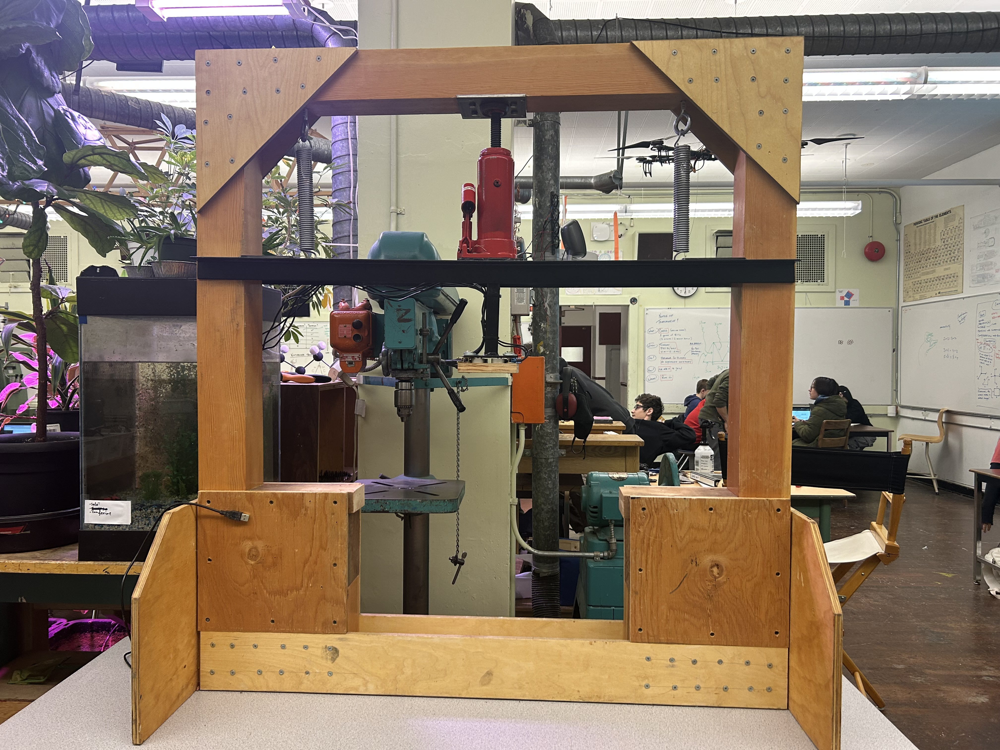

hello we're Alekhya and Rhys we are trying to building a strong bridge for a school project. or goal is to make a bridge with the constraints where given like it has to be 10cm or less wide . the hight as to be 20cm or less and the lenght has to be 50- 60 cm. We were also only givin 125g of spagetti and 5 hot glue sticks
Rhys: i make the sketches for the bridge and i helped glue and build the bridge along with alekhya.
Alekhya: I make the outlines for the bridge and also help glue it together on the coding side I write the code for the bridge website
In this project bridges are put under weight by this machine

the machien uses a hydrolic jack to push down the bar. which puts presure on the little square on the bottom. the square under the bar has 4 sensors that transfer how much weiight is put on it in pounds.
this is the template we used

this is the view through the middle of the bridge

this is the arial view of the bridge

this is the view of the bottom of our bridge
the reason we chose this design is that there are a lot of triangals which is the strongest shape. we also added cross bars to stabilize the middle areas.
Hight = 18 cm
Length = 56 cm
Width = 16 cm
Weight = 184 g
Held = 5.455 kg
Score = 29.6
the bridge was over the with limit width was a facture of why it failed but we also need to make it stronger in the middle. Bt also to get a better score we'd make it lighter
in our first test we found out we can make some superts thinner. we also need to figure out a way to make the center stronger.
the template
this is the view through the middle of the bridge
this is the side view of the bridge
this is the view of the top of our bridge
Hight = 19 cm
Length = 53 cm
Width = 7 cm
Weight = 144 g
Held = 8.5 kg
Score = 59
it faild by poor gluing and the bars in the middle snaped
this is the bridge after being crushed
From this test we found that the cross bars work and that we need to double check the glue bettween the joints. also we'd make the bars in the center bigger.